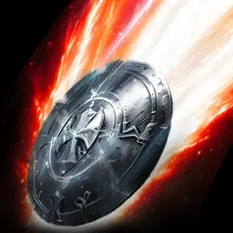
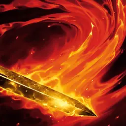
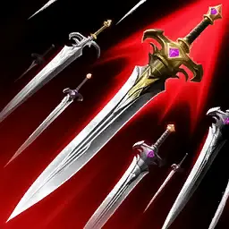
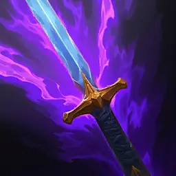
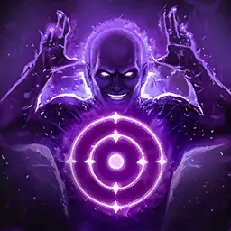

This build maps my Templar setup to a global-ready configuration. If you already read the Templar Ultimate Guide, the gearing philosophy, arcana priorities, and rotations still carry over. What changes for global is the stigma layout and, most importantly, how it shifts between level 45 and level 50.
🎮 Interactive Build (Questlog)
Explore the full global build below - skills, stigmas, passives, the David board, and every item. Click around to inspect each node; it is the live build straight from Questlog.
🧬 Skill Specializations (Core Skills)
The exact specialization choices on my core skills - what each one is leveled to and which modifiers I picked at every breakpoint. A checked box is a selected specialization; dimmed rows are the higher-level options not yet unlocked at this skill level. Every other skill's spec is live in the interactive builder above.
⌨️ Templar Macro Meta - The Holy Trinity
The meta Templar setup is built on the Holy Trinity:
  
- Left Click - Quick Slot 1
- Right Click - In-Game Macro (Quick Slot 4)
- C - Quick Slot 2
- R - Judgment (Razer macro key)
- Thumb - HyperSpeed → R, ~10 presses/sec
- Right Click (PvX): Doom Shield → Annihilate → Debilitating Smash → Pummel
- Right Click (PvE): Annihilate → Debilitating Smash → Flash Rampage → Pummel
- Thumb (R): Judgment → Shield Smite → Warding Strike → Doom Shield
Alternate: Annihilate Lv20 (AOE Knockdown)
An alternate to the pure Holy Trinity setup takes

🎛️ Three Preset Skill Pages
Set up three preset skill pages so you can swap instantly for the situation:
- Profile 1 - PvX: your everyday open-world / rift / mixed page.
- Profile 2 - PvP: arena and abyss fights.
- Profile 3 - PvE: dungeons and boss content.
Below, each profile lists the global stigma changes off the base layout. Where a stigma is "removed," that is where your Lv45 vs Lv50 flexibility lives - at 45 you are already down two slots, so lean on these cuts first.
🌀 Profile 1 - PvX (Templar Stigmas)
Your all-purpose page - the one you live in for open-world, rifts, and anything mixed.
 Empyrean Lord
Empyrean Lord Executing Blade
Executing Blade Battlefield Banner
Battlefield Banner Doom Shield
Doom Shield Nezekan Shield
Nezekan Shield Comrade in Arms
Comrade in Arms Second Skin Second Skin
Executing Blade
Second Skin Second Skin
Executing Blade
- Why these two: they are the safest cuts for the PvX page, which makes them your natural drops at Lv45 when you are two slots short.
- At Lv50, add both back for the full PvX layout.

⚔️ Profile 2 - PvP (Templar Stigmas)
Your fighting page. PvP splits by whether you are solo or rolling with a group, so the swaps differ.
Executing BladeEmpyrean LordDoom ShieldNezekan ShieldComrade in ArmsGroupSecond SkinAlt for Emp Lord Executing Blade
Empyrean Lord
Doom Shield
Nezekan Shield🔀 Alternate: replace
Empyrean Lord
→
Second Skin🤝 For group PvP - replace:
Nezekan Shield
→
Comrade in Arms.
- Solo: run Executing Blade, Empyrean Lord, Doom Shield, Nezekan Shield. Swap Empyrean Lord for Second Skin as the alternate when you want more survivability over the ranged stun.
- Group: keep your damage, but swap Nezekan Shield for Comrade in Arms so you bring team value instead of a purely selfish shield.
- Alternate (lategame): once your gear is deep, Assault Fury is a strong lategame swap on the PvP page - consider it over a weaker slot as you scale.

🐉 Profile 3 - PvE (Templar Stigmas)
Your dungeon and boss page. Like PvP, this splits by group (dungeons) vs solo.
Empyrean LordBattlefield BannerDoom Shield
TauntNezekan ShieldComrade in Arms Doom Shield
Nezekan Shield🗡️ For solo PvE - remove:
Comrade in Arms
Taunt
- Dungeons: drop Doom Shield and Nezekan Shield - your two Lv45 cuts for grouped PvE.
- Solo PvE: drop Comrade in Arms and Taunt - you do not need team utility or threat when you are alone, so these are the cuts here.

📊 Lv45 vs Lv50 - Quick Reference
Same presets, two slot budgets. At Lv45 you run without the two stigmas listed as "removed" for that profile; at Lv50 you add them back.
- PvX: Lv45 = full layout minus Second Skin + Executing Blade · Lv50 = both back in.
- PvP (solo): Lv45 = minus Second Skin + Empyrean Lord · Lv50 = both back in.
- PvP (group): run Comrade in Arms over Nezekan Shield at either level.
- PvE (dungeons): Lv45 = minus Doom Shield + Nezekan Shield · Lv50 = both back in.
- PvE (solo): run without Comrade in Arms + Taunt at either level.
📈 Stigma Leveling Priority (Breakpoints)
How you level your stigmas matters as much as which ones you slot. The whole system is driven by breakpoint value - each level milestone on a stigma is worth more or less depending on the game mode, so you chase the breakpoints that pay off for how you are playing.
Step 1 - Unlock all 4 (Lv1)
Before anything else, take all four stigmas for the game mode to Lv1. Breadth beats early depth - you want every tool online first.
Step 2 - First pushes to Lv5
Now take your most beneficial stigmas to Lv5, in this order:
- Lv5 - Empyrean Lord or Executing Blade (whichever fits your mode - see below).
- Lv5 - Battlefield Banner.
Step 3 - Chase breakpoints (Lv10+)
After Lv5, leveling is purely about the value of each breakpoint on your best stigmas. Prioritize in this order, following whichever tags match how you play:
- Lv10 - Empyrean Lord · PvE Prio
- Lv10 - Executing Blade · 1v1 PvP Prio
- Lv10 + Lv15 - Battlefield Banner · PvX Prio
- Lv15 - Doom Shield · PvX Prio
- Lv15 - Nezekan Shield · PvX Prio
- Lv20 - Doom Shield · PvP Prio
- Lv20 - Empyrean Lord · PvP Prio
- Lv20 - Comrade in Arms · PvX Prio
- Lv25 - Executing Blade · 1v1 PvP Prio
- Lv25 - Doom Shield · PvX Prio
- Lv25 - Battlefield Banner · PvE Prio
🌍 Global-Ready Notes
- Set all three preset pages before launch so you can swap PvX / PvP / PvE on the fly instead of rebuilding mid-session.
- Decide your Lv45 cuts now. Since you are two slots short at 45, the "removed" stigmas above are your plan - no scrambling when you level.
- Find a legion. Solo you get run over in the abyss. Join the Discord - veteran MMO / AION players.